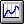
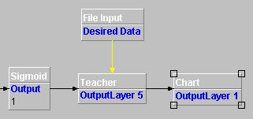
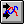
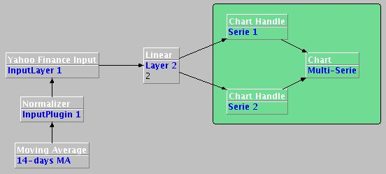
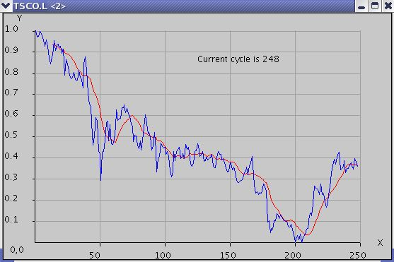
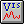
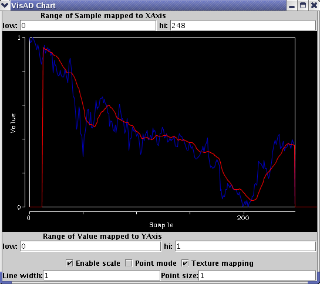

Charting Components
The Basic Chart Layer

This component belongs to the output components family, so it
can be used anywhere that makes sense to insert an output component.
For instance, it can be attached to the output of a Layer, or to the
output of a Teacher component.
The charting component has the
following properties:
maxXaxis: The
maximum value of the X axis. Set this value to the maximum number of
the samples required to visualise in the chart.
maxYaxis:
The maximum value of the Y axis. Set this value to maximum value you
expect to display in the chart.
name: The
name of the chart component.
resizable:
If true, the window containing the chart will be resizable. The
resizing of the window will rescale the entire chart, adapting itself
to the new size of the frame.
show: Used
to show or hide the window containing the chart.
title:
The text shown in the title bar of the window containing the
chart.
serie: Indicates what series
(column) in a multicolumn output data is to be displayed
To
show the RMSE values during the training phase, attach a charting
component to the output of a Teacher component, like depicted in the
following figure:

Open
the properties panel and set its properties according the expected
values:
- maxXaxis to a value depending on the max expected RMSE
of your net (normally between 0.5 and 1.0)
- maxYaxis equal to the
number of epochs you want to train the neural network
then set to
true the show property and run the net. You'll see a chart like the
following:

Plotting a multi-series chart
The Chart Handle Layer

This
component permits to attach several output layers to a single Chart
component to plot a multi-series chart.
This component must be
connected between an output layer and the Chart component, and you
need to use one of it for each serie you want to plot.
Its
properties are:
Color (blue)
Color (green)
Color
(red): They permit to select the color of the line representing
the plotted serie. Use a value between 0 and 255 (for example, if you
want to plot a yellow line, set blue=0, red and green=255)
Name:
the name of the component
Serie: Indicates what series
(column) in a multicolumn output pattern is to be displayed
To
see how to use this component, look at the following figure:

In
the green box there are two Chart Handles and one Chart component (of
course the two handles can be attached to different output
layers).
In this case we want to plot both the TSCO.L daily prices
and the corresponding 14-days moving average for an interval of 248
days. To do this, we use a Yahoo Finance input component along with a
Moving Average plugin (to see how the parameters have been set, open
the MultiSeries.ser file into the samples/editor/charting/
directory).
When we run the net, the following multi-series chart
appears:

The VisAD Chart Layer

This
component acts like the basic Chart component described above, but
uses an external graphic library named VisAD
to plot the chart. To use it, you must download the visad.jar library
and put it in your classpath.
Its properties are the same of the
basic Chart component.
The following figure shows how it appears
when displayed:

As
you can see, some of its properties are visible and editable directly
from within the drawing area, avoiding to open the component's
property panel to change them.
You can drag the mouse on
the chart to move it around the drawing area; pressing both the
two mouse buttons and dragging the mouse, a crossair will appear,
and the coordinates of the cursor will be shown on the upper left
corner; you can also press the shift button to zoom in/out the
chart.
At this first stage od integration, the VisAD chart
component is used to plot only line charts, as already does the basic
component, but in the future more and enhanced kind of charts will be
added to Joone thanks to the infinite possibilities gave by this
powerful graphic library.